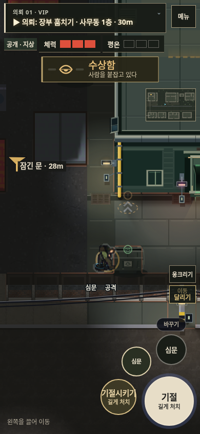
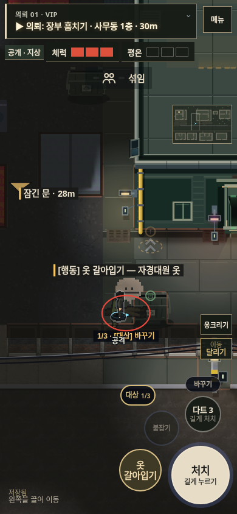
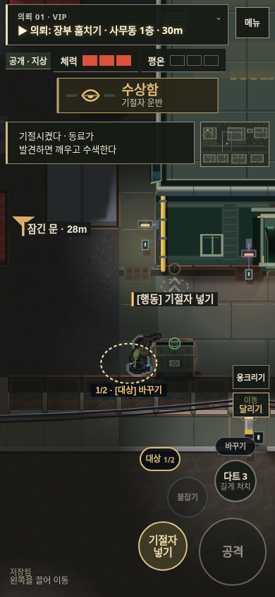
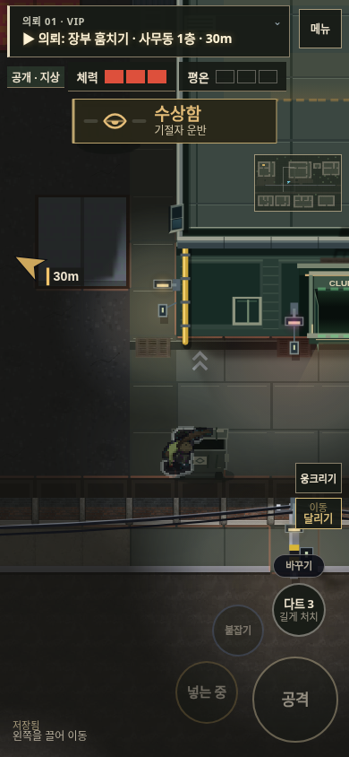
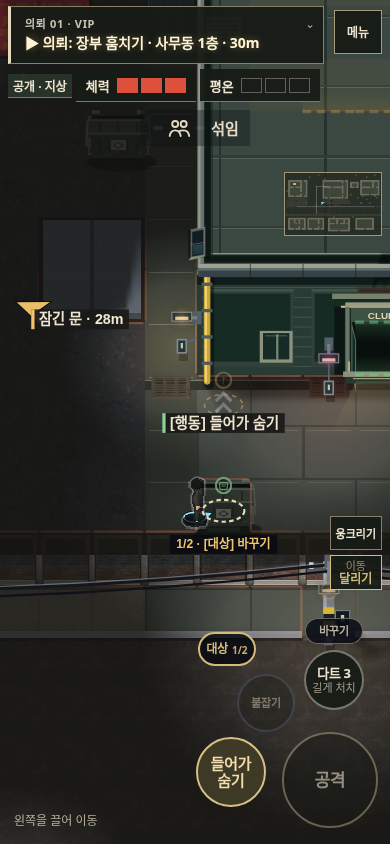
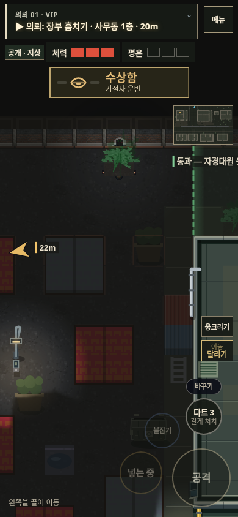
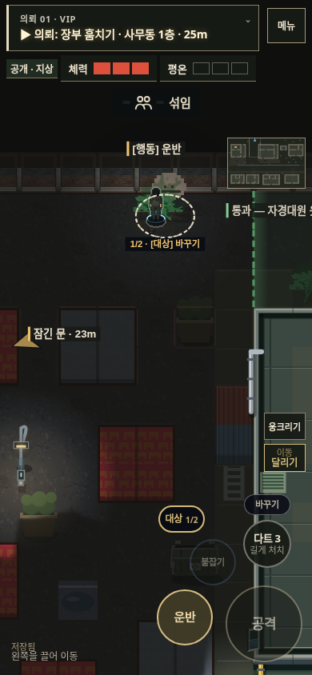
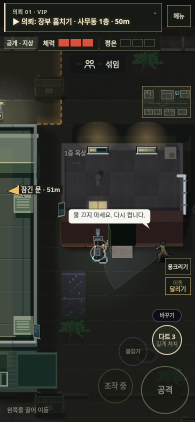
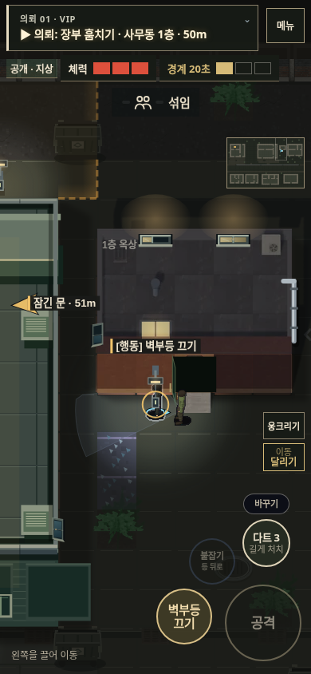
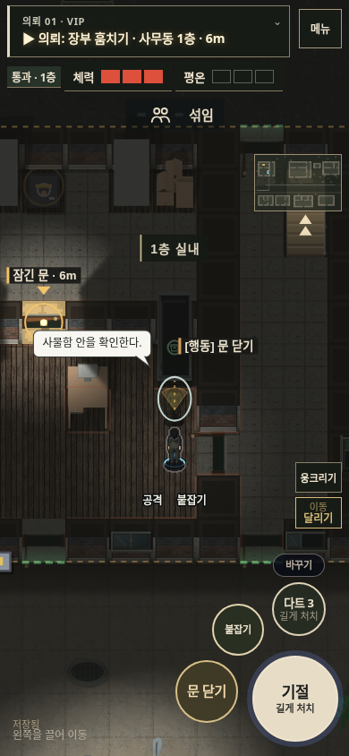

야행 v138 · 알아볼 수 있는 행동과 반응
2D 플레이 · 변경·검수 기록
아래는 실제 맵을 이용한 통제 배치 화면이다. 미션 완주나 실물 휴대폰 성능 측정 기록은 아니다.
소품과 통로 전후
클럽 옆에서 작은 소품이 막던 길을 열고, 다른 화분도 주변 바닥 위에 놓인 모습으로 맞췄다. 큰 수거함은 왼쪽에서 접근해 사용할 수 있다.
먼저 기절시키고, 따로 운반한다

1. 바깥에서 붙잡기
2. 기절시키기
3. 별도로 운반
4. 넣기 동작
5. 수납 완료풀숲 안쪽에 내려놓는다

내려놓기
은닉 완료경비가 반응하는 이유를 보인다

불 끄는 것을 봤을 때 항의
직접 와서 복구
은신처를 열어 확인조용한 기절 소리와 동료 발견 신고를 구분했다. 발견자는 외침이 전달되는 같은 층 주변 경비와 먼저 수색한다. 은신처는 실제 접근·확인 후 발견하며, 숨은 플레이어의 위치를 미리 알고 찾아가지 않는다.
검수 결과